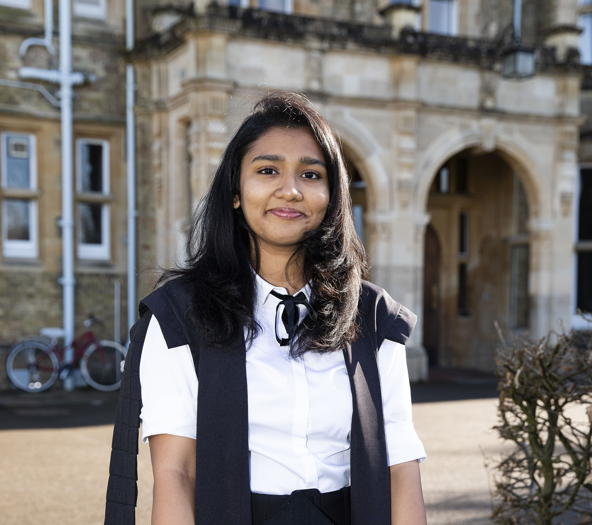

Multi-agent and game-theoretic models of population dynamics in complex sociotechnical systems, with applications to opinion formation, transportation and mobility systems, and safety-constrained autonomous agents.
Control- and game-theoretic models, opinion dynamics, feasibility limits, ethical constraints, information interventions.
Game-theoretic models of environmental, infrastructural, and policy shifts in transportation and mobility systems.
Signal Temporal Logic (STL), STL-GO, control synthesis, multi-agent systems.
Computer Systems · Autonomous Cyber-physical Systems